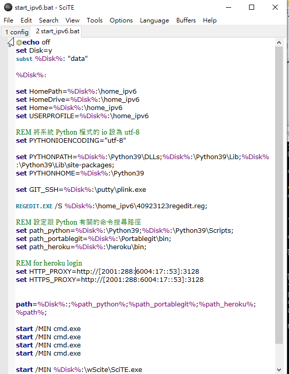
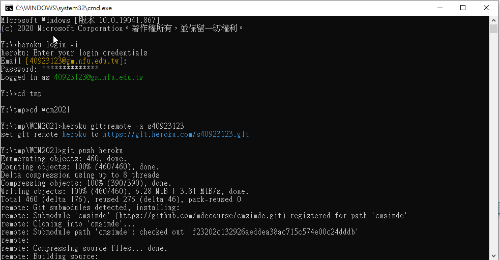

打開網站的方法(搬運資料) <<
Previous Next >> 學校網頁顯示測試
heroku 連結遠端方法
步驟一: (建立 Heroku 帳號) 進入 https://heroku.com, 利用學校配發的 @gm 登記一個 Heroku 帳號, 關鍵在於密碼設定必須要至少 8 個字元, 且字元中必須包含符號, 英文字母及數字, 並且登記後要進入 @gm 帳號進行確認後才能開通 Heroku 帳號.
完成帳號登記後, 必須知道目前 Heroku 只允許免費建立五個應用程式, 且每個程式的最大容量為 500MB.
步驟二: (建立 Heroku app) 登入 Heroku 後, 先以 s + 學號 建立第一個 app, 完成後, 將可至 https://s學號.herokuapp.com 連線取得網站最初內容.
步驟三: (下載 Heroku CLI) 從 http://a.kmol.info:88/heroku.7z 下載 Heroku cli 程式檔案, 解開至隨身碟 Y: 所在位置或者是 Hybrid 設定的位置.
步驟四: (修改命令搜尋路徑) 修改隨身系統的啟動批次檔案, 讓 Windows 的命令視窗中可以執行 heroku.exe, 或者稱作"設法將 heroku.exe 所在目錄位置, 設為 Windows 搜尋路徑之一".
重新啟動已經納入可執行 heroku.exe 的隨身碟 start_ipv6.bat 或 start_ipv4.bat
步驟五: (測試 heroku 執行) 測試是否能夠在修改後的命令列中執行 heroku.exe, 輸入 heroku version 若回應所使用的版本表示上述路徑設定已經成功.
步驟六: (設定 heroku 代理主機) 先前我們已經知道網路的應用包含 client 與 server, 不同 client 採用不同的 proxy 設定與 server 連線, 其中 firefox 作為 WWW 網路協定的 client, 有其自己的網路 Proxy 設定, 也可以直接使用操作系統的 Proxy 設定.
Chrome 作為 WWW 網路協定的 client, 目前 Windows 下的最新版, 只能使用操作系統的 Proxy 設定.
而 git 作為 git client 與 github server 連線的 Proxy 設定, 則寫在 y:\home_ipv6 下的 .giconfig 中, 以 git config --global http.proxy "http://your_proxy:port" 進行設定.
相同的道理 heroku cli 作為 https://heroku.com 伺服器的 client 端, 也有其 Proxy 的設定方式, 也就是在 start_ipv6.bat 中加入:
|
1
2
3
|
REM for heroku login
set HTTP_PROXY=http:
set HTTPS_PROXY=http:
|
步驟七: (設定同步倉儲) 針對利用 Heroku 同步 Github Pages 上的網站內容, 只需要透過 git remote add (Heroku 指令為 heroku git:remote -a heroku_倉儲_名稱, 之後只要在 heroku login 狀態下, 可以直接利用 git push) 在近端設定一個連線到 Heroku 倉儲的代號, 就能在每次更新 Github Pages 倉儲後, 再將內容同步至 Heroku. 網際內容管理課程將使用兩種 Heroku app 設定, 也就是靜態網頁與動態網頁:
靜態網頁 - 採用 php 方式部署, 讓 Heroku 將靜態網頁視為 PHP 程式, 利用 index.php 跳轉到 index.html
動態網頁 - 讓 Heroku 執行 cmsimde/wsgi.py 的方式進行雲端伺服.
步驟八: (以 git 進行提交推送) 利用 heroku git:remote -a 設定的同步倉儲其推送名稱內定為 "heroku", 使用者只要使用 git push heroku 就可以將改版內容推送到對應的 Heroku app 倉儲.
指令操作步驟:
|
1
2
3
4
|
heroku login -i
heroku git:remote -a taiwan-no1
|
上述步驟完成後的 Heroku 網站: https://taiwan-no1.herokuapp.com
----------------------------上述為老師的步驟教學---------------------------------------
接下來會在下面去解說實際上可能會遇到的問題
路徑問題
首先是heroku檔案的位置路徑必須是正確的只要位置不對啟動程式無法透過路徑找到heroku的執行檔,
這時打有關heroku的指令都會顯示: heroku不是內部指令的提示

從圖中可以看到新增
set path_heroku=%Disk%:\heroku\bin;
此行就是指在開啟時設定heroku路徑的位置去抓出heroku檔案的指令
set HTTP_PROXY=http://[2001:288:6004:17::53]:3128
set HTTPS_PROXY=http://[2001:288:6004:17::53]:3128
再來這兩行則是在進行等等heroku登陸的Proxy的設定
最後下面的
path=%Disk%:;%path_python%;%path_portablegit%;%path_heroku%;%path%;
其中的%path_heroku%;就是將路使用這些路徑,第一行是設定路徑而這行是使用設定的路徑
------------------------------------------------------------------------------------------------
等上述路線都確認無誤後即可測試heroku version如有出現版本號則表示成功

再來照著步驟登陸後切換到自己的倉儲下輸入 heroku git:renite -a 自己設定的heroku app名稱
出現藍字就表示成功
打開網站的方法(搬運資料) <<
Previous Next >> 學校網頁顯示測試